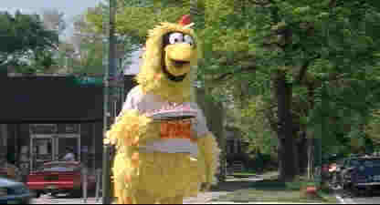

U.S. Marshals(SE)/C+,A-
Warner/1998/131m/ANA,WS 1.85Ostensibly the sequel to The Fugitive, U.S. Marshals, blatantly knocks off the excellent Fugitive kick-off, and, pardon the pun, waters it down with an extended airplane crash into the wash. It's clear that the U.S. Marshals doesn't exhibit the imagination or discipline of its exciting predecessor. Whereas the bus-train crash sequence in The Fugitive was executed in brief, brilliant strokes, the later rip-off is flabby, drawn-out, and sapped of the energy needed to propel U.S. Marshals off to the exciting start it needs.
This time Wesley Snipes plays a guy wrongfully accused of murder. While The Fugitive was simple and elegant in its plotting, the sequel is overly complex, and over-baked in its resolve. Clearly, a major problem is that the Snipes character does not generate the same sympathy as Ford's Dr. Richard Kimble. Tommy Lee Jones again leads the team chasing the runaway. Jones has to make too many cute remarks. His character has lost the edge. Many its one job too many for Marshal Sam Gerard. Robert Downey, Jr. Plays a laid back Federal Agent who joins the hunt.
 |
Yes, it's Tommy Lee Jones!©Warner |
Hey, you can't have everything. U.S. Marshals(What a boring title!)is a terrific looking and sounding DVD. Images are sharp without adding significant edge enhancement, colors are natural. Check out the leaves on the trees. They are well defined and stable. It's a good sign that care was taken in the transfer and compression of the disc. Blue skies are devoid of annoying grain that plagues some DVDs. The same is likewise outstanding. There are lots of extras included in this DVD package, including commentary by director Stuart Baird(editor of the first film), a good look at the special effects sequence of the plane crash and more. The commentary has some long gaps between observations.